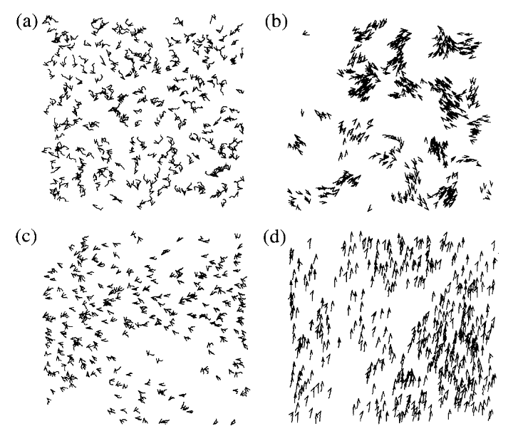
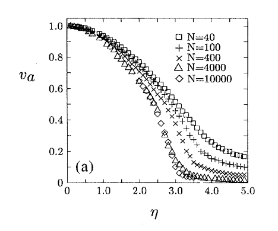
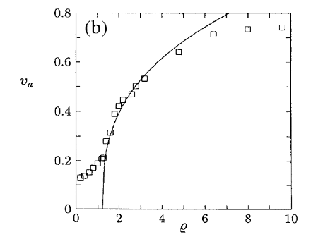
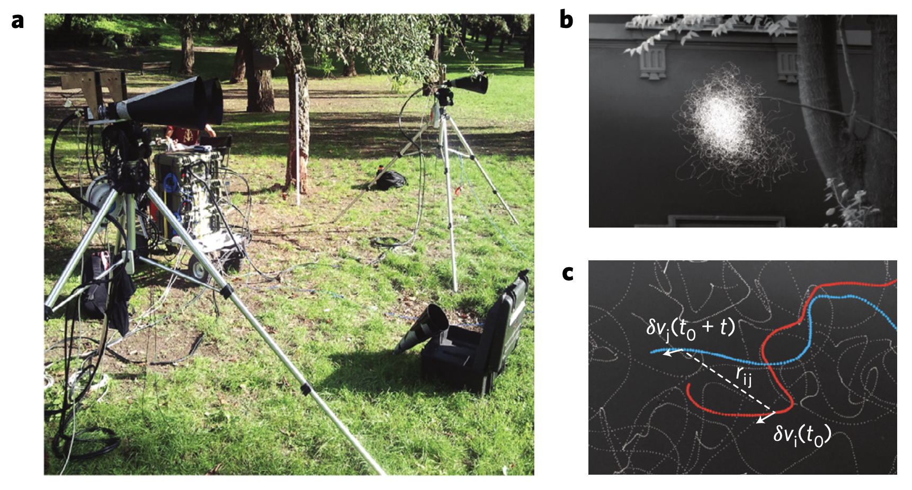
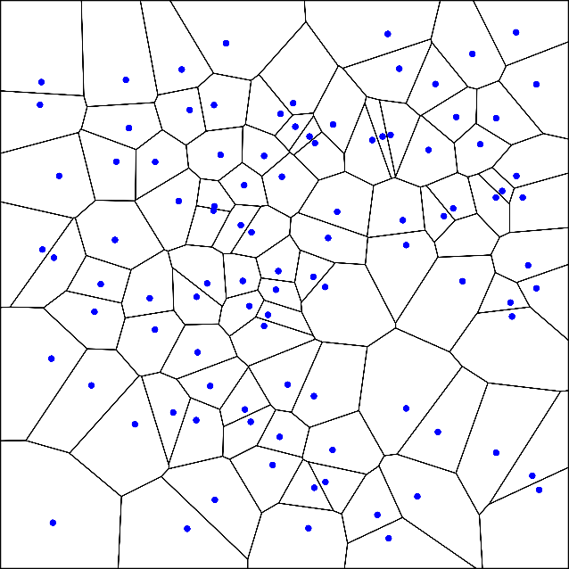

Vicsek Model and Flocking Transition
Introduction to Collective Motion
The Vicsek model, introduced in 19951, provides a minimal framework for understanding collective motion in active systems. It was motivated by striking observations of coordinated movement across diverse biological systems, from bird flocks and fish schools to bacterial colonies and insect swarms. These natural systems display remarkable collective behaviors despite the absence of any centralized control mechanism.
The model’s profound impact on the active matter community stems from its demonstration that simple local alignment rules can produce complex collective phenomena without any centralized control. The Vicsek model established the paradigm that active systems—those consuming energy to maintain non-equilibrium states—can exhibit fundamentally different physics from their passive counterparts.
Mathematical Formulation
In the Vicsek model, self-propelled particles move with constant speed while adjusting their direction based on their neighbors. The update rule is elegantly simple:
\[\theta_i(t+1) = \langle \theta_j(t) \rangle_{j \in \mathcal{N}_i} + \eta \xi_i(t)\]
where \(\theta_i\) is the direction of the \(i\)-th particle, \(\mathcal{N}_i\) represents its neighbors within a radius \(R\), and \(\xi_i(t)\) is a random variable uniformly distributed in \([-\pi,\pi]\) with noise strength \(\eta\).
The particles move with position updates:
\[\mathbf{r}_i(t+1) = \mathbf{r}_i(t) + v_0 (\cos\theta_i(t+1), \sin\theta_i(t+1))\]
This simple model captures the essential dynamics of collective motion: local alignment interactions combined with noise, leading to emergent global order.
Phase Transition Behavior
The key physical insight from the Vicsek model is the emergence of a phase transition controlled by two parameters: the noise strength \(\eta\) and the particle density \(\rho\). As noise decreases or density increases, the system transitions from a disordered gas-like state to a coherent flock where particles move collectively in a common direction.
This transition is typically characterized by the order parameter:
\[\phi = \frac{1}{Nv_0}\left|\sum_{i=1}^{N} \mathbf{v}_i\right|\]
Which measures the degree of alignment between particle velocities, ranging from 0 (complete disorder) to 1 (perfect alignment).



Nature of the Phase Transition
The nature of the order-disorder transition in the Vicsek model has been the subject of significant debate in the scientific community. In their original 1995 paper4, Vicsek and colleagues characterized the transition as continuous (second-order), with the order parameter scaling as \((\eta_c-\eta)^\beta\) with \(\beta \approx 0.45\).
Continuous phase transitions are characterized by several key features that the Vicsek model appears to share:
Scale-free correlations: Near the critical point, correlation lengths diverge, leading to scale-invariant behavior where fluctuations occur at all length scales. This property is evidenced in the Vicsek model by the emergence of clusters of aligned particles at all scales near the transition.
Critical exponents: The behavior near the transition can be described by power laws with characteristic critical exponents. The original Vicsek model revealed an order parameter exponent \(\beta \approx 0.45\), which differs from known equilibrium universality classes, suggesting a novel universality class specific to active systems.
Universality: The values of these exponents are expected to be universal, depending only on fundamental properties like symmetry and dimensionality rather than microscopic details. Recent work by Jentsch and Lee (2024) has proposed that the Vicsek model indeed represents a novel universality class with distinct critical exponents that have been confirmed through both theoretical analysis and simulations.
Dynamic scaling: Time-dependent correlation functions exhibit scaling properties near the critical point, as demonstrated by Cavagna et al. (2017) in natural swarms, though with important differences from the Vicsek model predictions.
However, subsequent studies by Chaté and collaborators (2008) challenged this view, presenting evidence that the transition might actually be first-order (discontinuous) under certain conditions. Their detailed numerical analyses revealed that the apparent continuous nature of the transition might be an artifact of finite-size effects and simulation protocols.
Recent research by Solon, Chaté, and Tailleur (2015) has offered a unifying perspective by framing the Vicsek transition as analogous to a liquid-gas transition rather than a simple order-disorder one. In this view, the system undergoes microphase separation, leading to traveling bands of high-density ordered regions surrounded by a disordered gas phase. This interpretation helps explain the apparent discontinuity while connecting to the original observations of scaling behavior.
Connections to Other Models
The Vicsek model bears striking resemblances to classical equilibrium models in statistical physics, particularly the XY model, while also connecting to the simpler Ising model. Like the two-dimensional XY model, the Vicsek system has continuous rotational symmetry—particles can point in any direction in the plane—and exhibits ordering through alignment interactions. Both models use similar order parameters measuring the degree of collective alignment.
However, a crucial difference emerges: while the Mermin-Wagner theorem prohibits long-range order in the 2D equilibrium XY model at finite temperature due to thermal fluctuations, the active Vicsek system can maintain stable ordered states because it operates far from equilibrium through constant energy injection.
The connection to the Ising model is more conceptual but equally illuminating. Both models involve local alignment interactions leading to global order-disorder transitions, with the key distinction being that Ising spins are discrete (up/down) while Vicsek particles have continuous orientations. In some sense, the Vicsek model can be viewed as a “dynamic Ising model” with continuous spins, constant motion, and broken detailed balance—features that fundamentally alter the nature of the phase transition.
Interactive Vicsek Model Simulation
Below is an interactive simulation of the Vicsek model, demonstrating how local alignment interactions lead to global order. You can adjust key parameters to observe how they affect the emergence of flocking behavior.
This simulation demonstrates the core principles of the Vicsek model:
Local Alignment: Each particle adjusts its direction to align with neighbors within the interaction radius.
Noise Influence: Random noise disrupts perfect alignment, mimicking individual variation or environmental disturbances.
Phase Transition: By adjusting the parameters, you can observe a transition from disordered motion (high noise, small radius) to coordinated flocking (low noise, large radius).
Emergent Behavior: The global ordering emerges spontaneously from purely local interactions, without any centralized control.
Try different parameter combinations to explore how these factors affect the collective dynamics. For instance, increasing the noise while keeping other parameters constant will eventually break down the ordered flocking state, illustrating the noise-induced phase transition that made the Vicsek model so influential in the field of active matter.
Empirical Evidence and Model Limitations
Recent experimental studies have provided crucial insights that both validate and challenge aspects of the Vicsek model. Cavagna et al. (2017) demonstrated the emergence of dynamic scaling laws in natural swarms of midges, establishing that these biological collectives exhibit critical behavior analogous to physical systems near phase transitions. Their groundbreaking analysis revealed that spatio-temporal correlation functions in different swarms can be rescaled using a single characteristic time, which grows with correlation length according to a dynamical critical exponent z ≈ 1. This finding stands in stark contrast to both equilibrium models and simulations of self-propelled particles (including the Vicsek model), which typically yield z ≈ 2.

The study provided experimental evidence for non-dissipative modes in the relaxation dynamics of swarms, indicating that previously overlooked inertial effects are essential to describe collective animal motion accurately. Unlike the original Vicsek model, which assumes instantaneous alignment and purely dissipative dynamics, real biological systems appear to incorporate behavioral inertia that fundamentally alters information propagation through the group.
This finding aligns with research by Attanasi et al. (2014) on information transfer in starling flocks during collective turns. Their empirical observations revealed that direction changes propagate across flocks with a linear dispersion law and negligible attenuation, dramatically minimizing group decoherence. This linear and undamped propagation stands in direct opposition to standard models of collective motion, including the original Vicsek model, which predict diffusive transport of information that would cause significant group fragmentation during rapid maneuvers.
Extensions of the Vicsek Model
Topological Interactions in Collective Motion
The original Vicsek model uses metric interactions, where particles align with neighbors within a fixed radius. However, studies of starling flocks by Ballerini et al. (2008) revealed that birds interact with a fixed number of neighbors rather than all individuals within a certain distance. This topological interaction scheme has profound implications for collective behavior.
In topological Vicsek models, each particle interacts with its k nearest neighbors regardless of their distance. The update rule becomes:
\[\theta_i(t+1) = \langle \theta_j(t) \rangle_{j \in \mathcal{K}_i} + \eta \xi_i(t)\]
where \(\mathcal{K}_i\) represents the k nearest neighbors of particle i.
This seemingly subtle change produces several significant effects:
Scale-free correlation: Topological interactions allow correlation lengths to scale with group size, maintaining cohesion across varying densities.
Robustness to density fluctuations: The system can sustain coherent motion even when local density varies dramatically.
Enhanced information transfer: Information propagates more efficiently through topologically connected networks compared to metric ones.
High-speed tracking experiments of starling flocks found that birds consistently interact with their 6-7 nearest neighbors, regardless of flock density. This topological interaction rule appears optimized for both robust cohesion and rapid information transfer.
Voronoi-Based Interactions
A refinement of topological interactions comes through Voronoi tessellation, where space is partitioned into regions closest to each particle. In the Voronoi Vicsek model, particles interact with their Voronoi neighbors—those sharing a boundary in the tessellation.

The key advantage is biological realism: a Voronoi diagram naturally identifies which neighbors are directly “visible” to each individual, closely matching how visual animals like birds or fish perceive their surroundings.
The Voronoi approach gives:
\[\theta_i(t+1) = \langle \theta_j(t) \rangle_{j \in \mathcal{V}_i} + \eta \xi_i(t)\]
where \(\mathcal{V}_i\) represents the Voronoi neighbors of particle i.
Simulations show that Voronoi interactions produce realistic features observed in animal groups:
- Dynamic, responsive local structure that adapts to environmental challenges
- Anisotropic interaction regions that prioritize individuals in the direction of motion
- More efficient information propagation compared to fixed-radius interactions
Recent work by Bastien and Romanczuk (2020) showed that Voronoi-based models better replicate the emergent properties of fish schools, particularly the characteristic “milling” behavior where groups form rotating torus patterns.
Delay Vicsek Model: Information Transfer with Memory
Recent empirical studies revealing linear wave propagation in starling flocks highlight a key limitation of the standard Vicsek model: it assumes that particles respond instantaneously to the orientation of their neighbors. However, real biological agents—whether birds, fish, or cells—can’t react immediately due to sensory processing time, neural delays, and mechanical constraints of their bodies. This limitation has motivated the development of delay Vicsek models, where particles adjust their orientation based on the state of their neighbors at some time in the past.
The delay Vicsek model modifies the standard update rule to incorporate this temporal lag:
\[\theta_i(t+1) = \langle \theta_j(t-\tau) \rangle_{j \in \mathcal{N}_i} + \eta \xi_i(t)\]
where \(\tau\) represents the time delay. This seemingly simple modification produces profound changes in the collective dynamics:
Wave-like information propagation: With appropriate delay times, perturbations propagate through the system as waves rather than diffusively, matching the linear propagation observed in natural flocks.
Emergence of oscillatory states: The system can develop spatiotemporal patterns like traveling waves, oscillations, and even chaotic states not seen in the standard model.
Enhanced stability in some regimes: Counterintuitively, moderate time delays can sometimes stabilize ordered motion by dampening overreactions to fluctuations.
The role of delay becomes particularly important when considering how flocks respond to rapid environmental changes like predator attacks. Studies on self-propelled particle models with variable speed, such as the work by Mishra et al. (2012) 5, provide insights into how information can propagate through collectives at rates much faster than would be possible through sequential neighbor-to-neighbor transmission.
Experimental validation comes from studies like those by Calovi et al. (2018) 6, who analyzed trajectory data from schooling fish with burst-and-coast swimming patterns. They disentangled and modeled the interactions involved in swimming coordination, finding that both attraction and alignment behaviors govern how fish react to their neighbors. Their data-driven model successfully reproduced the key features of coordinated motion observed in experiments, showing how these interactions allow fish to maintain cohesion during complex maneuvers.
Theoretically, the delay Vicsek model provides a critical link between microscopic interaction rules and macroscopic wave propagation. When properly formulated with inertial effects (resistance to orientation changes), the model produces a linear dispersion relation for small perturbations:
\[\omega \approx c_s q + i\gamma q^2\]
where \(c_s\) is the propagation speed and \(\gamma\) is a damping coefficient. This matches the observed dynamics of starling flocks far better than the purely diffusive propagation (\(\omega \sim iq^2\)) predicted by the standard Vicsek model.
Current research is exploring how heterogeneous delays (different response times for different individuals) affect collective dynamics, and how natural systems might exploit these delay effects to optimize information transfer while maintaining robust coordination in noisy environments.
Information Propagation in Active Groups
Mathematical Derivation of the Dispersion Relation
Accurate models of information transfer in animal groups require understanding how behavioral changes propagate through a collection of moving individuals. Unlike the diffusive transport predicted by the original Vicsek model, empirical data from starling flocks shows that directional information travels as a wave with minimal damping, enabling rapid collective responses without sacrificing group cohesion.
To understand the mathematics behind this propagation, we start with a linearized description of small perturbations to a uniformly ordered flock. Consider a system where all individuals are initially moving in the same direction (along the x-axis) when a small perturbation in orientation is introduced. The key insight from biological data is that individuals exhibit behavioral inertia—they resist sudden changes in direction due to physical and cognitive constraints.
Incorporating inertia leads to a second-order differential equation in time for the orientation field:
\[\tau \frac{\partial^2 \theta}{\partial t^2} + \frac{\partial \theta}{\partial t} = v_0 J \nabla^2 \theta + \eta\]
where \(\tau\) is the inertial time constant, \(v_0\) is the speed, \(J\) is the alignment coupling strength, and \(\eta\) represents noise.
Without inertia (\(\tau=0\)), this reduces to a diffusion equation:
\[\frac{\partial \theta}{\partial t} = v_0 J \nabla^2 \theta + \eta\]
leading to diffusive information propagation with dispersion relation \(\omega = i D q^2\) where \(D = v_0 J\). This implies that perturbations decay without propagating, with characteristic timescales that scale as \(t \sim 1/q^2\) with wavenumber.
However, with inertia (\(\tau > 0\)), we get the dispersion relation:
\[\omega = \frac{-i \pm \sqrt{4\tau v_0 J q^2 - 1}}{2\tau}\]
For sufficiently long wavelengths (small \(q\)), this produces purely damped modes. But for \(q > q_c = 1/\sqrt{4\tau v_0 J}\), propagating modes emerge with:
\[\omega \approx \pm c_s q - i\gamma\]
where \(c_s = \sqrt{v_0 J/\tau}\) is the propagation speed and \(\gamma\) is a damping coefficient.
This transition from diffusive to wave-like transport at a critical wavelength matches observations in starling flocks, where directional changes propagate linearly (constant speed) rather than diffusively across the group.
Wave-like Information Transfer in Starling Flocks
Field studies of starling murmurations provide compelling evidence for wave-like propagation of direction changes. Attanasi et al. (2014) analyzed high-speed video recordings of thousands of starlings performing collective turns and measured how orientation changes propagate through the flock. Their analysis revealed several key features:
Linear propagation: Changes in direction spread through the flock at a nearly constant speed of approximately 20-40 meters per second, far faster than the flight speed of individual birds (about 10-15 m/s).
Low attenuation: Unlike diffusive processes where information degrades as it spreads, the turning waves maintained their form with minimal damping as they traversed the entire flock.
Scale-free behavior: The propagation speed showed remarkable consistency across flocks of different sizes, suggesting a fundamental mechanism independent of specific group parameters.
This wave-like propagation is critical for collective survival: when a predator approaches, the need to transmit evasive maneuver information quickly throughout the group becomes a matter of life and death. Diffusive propagation would cause the flock to fragment during rapid turns, making individuals vulnerable to predation.
Footnotes
Vicsek, T., Czirók, A., Ben-Jacob, E., Cohen, I., & Shochet, O. (1995). Novel type of phase transition in a system of self-driven particles. Physical Review Letters, 75(6), 1226-1229. https://doi.org/10.1103/physrevlett.75.1226↩︎
Vicsek, T., Czirók, A., Ben-Jacob, E., Cohen, I., & Shochet, O. (1995). Novel type of phase transition in a system of self-driven particles. Physical Review Letters, 75(6), 1226-1229. https://doi.org/10.1103/physrevlett.75.1226↩︎
Vicsek, T., Czirók, A., Ben-Jacob, E., Cohen, I., & Shochet, O. (1995). Novel type of phase transition in a system of self-driven particles. Physical Review Letters, 75(6), 1226-1229. https://doi.org/10.1103/physrevlett.75.1226↩︎
Vicsek, T., Czirók, A., Ben-Jacob, E., Cohen, I., & Shochet, O. (1995). Novel type of phase transition in a system of self-driven particles. Physical Review Letters, 75(6), 1226-1229. https://doi.org/10.1103/physrevlett.75.1226↩︎
Mishra, S., Tunstrøm, K., Couzin, I. D., & Huepe, C. (2012). Collective dynamics of self-propelled particles with variable speed. Physical Review E, 86(1), 011901. https://doi.org/10.1103/PhysRevE.86.011901↩︎
Calovi, D. S., Litchinko, A., Lecheval, V., Lopez, U., Pérez Escudero, A., Chaté, H., Sire, C., & Theraulaz, G. (2018). Disentangling and modeling interactions in fish with burst-and-coast swimming reveal distinct alignment and attraction behaviors. PLOS Computational Biology, 14(1), e1005933. https://doi.org/10.1371/journal.pcbi.1005933↩︎